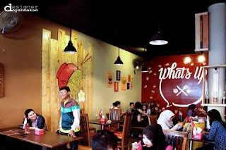
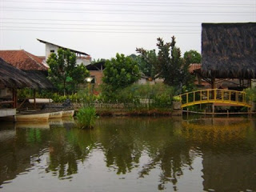
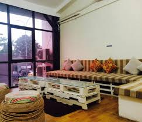

Daftar Wisata Kuliner Kota Depok
Whast Up
The Next Level of Indomie" adalah jargon yang diusung oleh kafe ini. Terdapat olahan unik Indomie seperti Indomie Blackpepper Beef, Indomie Carbonara dan untuk pecinta makanan pedas kamu harus coba Indomie Oseng Mercon yang rasanya ajib. Mie disini diolah tanpa memasukan bumbu dalam kemasan sehingga rasa mie diolah sesuai menu masakan. Selain mie, ada variasi unik dari nasi goreng dan roti bakar, aneka snack seperti oreo goreng, es krim goreng dan bermacam minuman. Di kafe ini terdapat mainan seperti Uno, Ludo, Remi dan ular tangga yang bisa kamu mainkan bersama teman-teman ketika sedang menunggu pesanan. Atau jika kamu beruntung terkadang ada Live Acoustic pada sore hari hingga menjelang malam. Harga makanan di Whats Up berkisar antara Rp.6.000-Rp.25.000 sementara minuman antara Rp.4.000-Rp.15.000
View details »Saung Talaga
Dinamakan saung talaga karena tempat makan ini berada dekat talaga atau danau dan tempat makannya sendiri berupa saung atau pendopo terapung, menjadikan tempat makan ini sangat direkomendasikan untuk kamu yang suka makan di tempat yang rimbun dengan pepohonan dan berudara sejuk.
View details »Caffe Hello Bingsu
Berbeda dengan kafe yang menyajikan menu korean food, cafe hello bingsu menyediakan makanan-makanan berupa dessert, snack dan aneka minuman juga spesialisasi berupa Bingsu, yaitu makanan penutup khas korea berupa es kacang merah dengan berbagai macam variasi seperti Choco Bingsu, Fruit Bingsu atau Oreo Bingsu.
View details »